tensorly.decomposition.parafac2
-
parafac2(tensor_slices, rank, n_iter_max=100, init='random', svd='numpy_svd', normalize_factors=False, tol=1e-08, random_state=None, verbose=False, return_errors=False, n_iter_parafac=5)[source] PARAFAC2 decomposition [1] of a third order tensor via alternating least squares (ALS)
Computes a rank-rank PARAFAC2 decomposition of the third-order tensor defined by tensor_slices. The decomposition is on the form 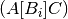 such that the
i-th frontal slice, , of
, of  is given by
is given by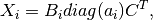
where
 is the diagonal matrix whose nonzero entries are equal to
the
is the diagonal matrix whose nonzero entries are equal to
the  -th row of the 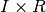 factor matrix
-th row of the 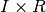 factor matrix  ,
,  is a 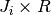 factor matrix such that the cross product matrix 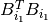
is constant for all , and
is a 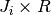 factor matrix such that the cross product matrix 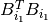
is constant for all , and  is a 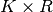 factor matrix.
To compute this decomposition, we reformulate the expression for such that
is a 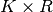 factor matrix.
To compute this decomposition, we reformulate the expression for such that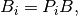
where
 is a orthogonal matrix and
is a orthogonal matrix and  is a
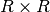 matrix.
is a
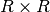 matrix.An alternative formulation of the PARAFAC2 decomposition is that the tensor element 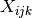 is given by

with the same constraints hold for
as above.Parameters: - tensor_slicesndarray or list of ndarrays
Either a third order tensor or a list of second order tensors that may have different number of rows. Note that the second mode factor matrices are allowed to change over the first mode, not the third mode as some other implementations use (see note below).
- rankint
Number of components.
- n_iter_maxint
Maximum number of iteration
- init{‘svd’, ‘random’, CPTensor, Parafac2Tensor}
Type of factor matrix initialization. See initialize_factors.
- svdstr, default is ‘numpy_svd’
function to use to compute the SVD, acceptable values in tensorly.SVD_FUNS
- normalize_factorsbool (optional)
If True, aggregate the weights of each factor in a 1D-tensor of shape (rank, ), which will contain the norms of the factors. Note that there may be some inaccuracies in the component weights.
- tolfloat, optional
(Default: 1e-8) Relative reconstruction error tolerance. The algorithm is considered to have found the global minimum when the reconstruction error is less than tol.
- random_state{None, int, np.random.RandomState}
- verboseint, optional
Level of verbosity
- return_errorsbool, optional
Activate return of iteration errors
- n_iter_parafac: int, optional
Number of PARAFAC iterations to perform for each PARAFAC2 iteration
Returns: - Parafac2Tensor(weight, factors, projection_matrices)
- weights1D array of shape (rank, )
all ones if normalize_factors is False (default), weights of the (normalized) factors otherwise
- factorsList of factors of the CP decomposition element i is of shape
(tensor.shape[i], rank)
- projection_matricesList of projection matrices used to create evolving
factors.
- errorslist
A list of reconstruction errors at each iteration of the algorithms.
Notes
This formulation of the PARAFAC2 decomposition is slightly different from the one in [1]. The difference lies in that here, the second mode changes over the first mode, whereas in [1], the second mode changes over the third mode. We made this change since that means that the function accept both lists of matrices and a single nd-array as input without any reordering of the modes.
References
[1] (1, 2, 3) Kiers, H.A.L., ten Berge, J.M.F. and Bro, R. (1999), PARAFAC2—Part I. A direct fitting algorithm for the PARAFAC2 model. J. Chemometrics, 13: 275-294.